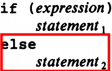
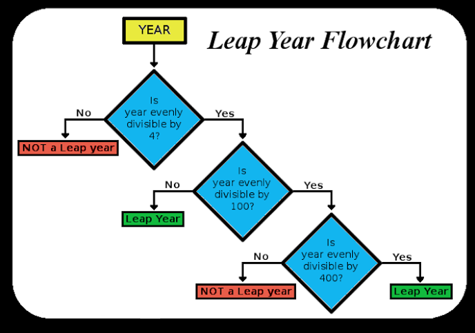
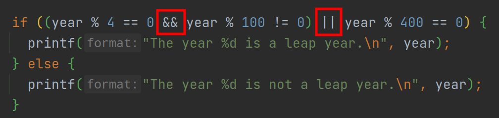
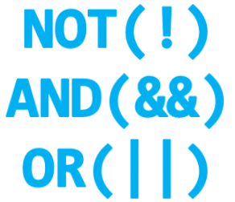
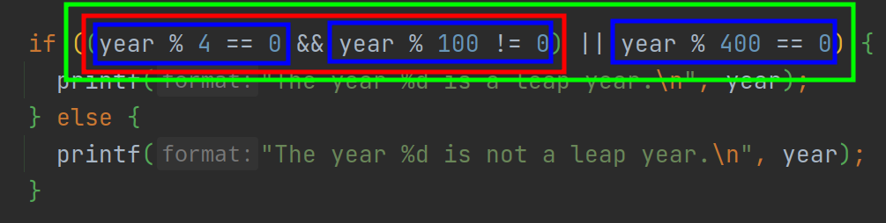
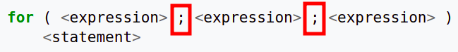
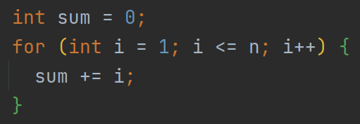
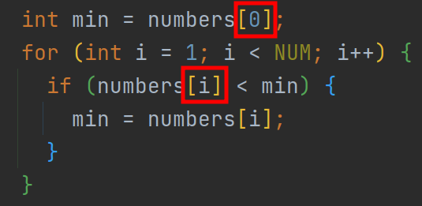

Variables, Types, IO
Hengfeng Wei
hfwei@nju.edu.cn

Oct. 11, 2021
Overview
Variables (变量) Constants (常量)
Data Types (数据类型)
Operators (运算符) Expressions (表达式)
Assignment Statements (赋值语句)
I/O (Input/Output; 输入输出)
"Talk is Cheap. Show me the Code."

circle.c sphere.c mol.c admin.c
Circle
Given a radius ($10$) of a circle,
to compute its circumference and area.
$L = 2\pi r$ $S = \pi r^2$
- 每个结果各占一行
- 小数点后保留两位
Declaration (声明)
int radius = 10;
- Introduce a variable called
radius. - You can use
radiuslater. - The type of
radiusisint(integer). radiusis initialized (初始化) to10.- You can assign (赋值) other values to
radius. radiusrefers to a location (&radius) in memory.
Definition (定义)
int radius = 10; is also a definition.
Any definitions are declarations.
All declarations are definitions (at least for now).
Identifiers (标识符)
int radius = 10;
The name radius is an identifier.
- made up of letters, numbers, and underscores
- do not start with a number
Identifiers
- Use meaningful identifiers
surface_areavs.surfaceArea
Operators and Expressions
double circumference = 2 * PI * radius;
Assignment Statements
double circumference = 0;
circumference = 2 * PI * radius;
Sphere
Given a radius ($100$) of a sphere,
to compute its surface area and volume.
$A = 4 \pi r^2$ $V = \frac{4}{3} \pi r^3$
- 每个结果各占一行
- 小数点后保留四位
- 每个结果至少占$15$字符, 左对齐
_______________ : surface_area_______________ : volume
mol
$6$ 克氧气的物质的量是多少?
$Q = 6 / 32 \times 6.02 \times 10^{23}$
两种格式输出, 结果均使用科学计数法表示
- 第一行结果, 小数点后保留三位
- 第二行结果, 保留五位有效数字
Data Types
int($\approx \mathbb{Z}$)double($\approx \mathbb{R}$)char(Character; 字符)C string(char array; 字符数组)
int $\approx \mathbb{Z}$
INT_MIN INT_MAX
printf("INT_MIN = %d \t INT_MAX = %d\n", INT_MIN, INT_MAX);
A (Naive) Administration System
- Name (EN)
- Gender (F/M)
- Birthday (mm-dd-yyyy)
- Weekday (Xyz.)
- C
- Music
- Medicine
- Mean (.d)
- Standard Deviation (.dd)
- Ranking ($\%$)
A (Naive) Administration System
- 每组信息占一行
- 各项信息使用 "TAB" 间隔
- 各项信息要遵循特定格式要求
罗大佑

Data Types: char

isdigit isalpha isalnumislower isupper tolower toupperisspace(including, \n, \t)
Data Types: C string
char first_name[] = "Tayu";
A C string is an array of characters.
'\0': terminating null character
'T', 'a', 'y', 'u', '\0'
char first_name[5] = "Tayu";
char first_name[10] = "Tayu";
char first_name[2] = "Tayu";
printf
int printf(const char *format, ...);format: format string (格式串)...: variable argument list (可变长参数列表)
printf
int printf(const char *format, ...);The format string consists of
- ordinary characters (not %)
- conversion specifications (转换说明)
- each of which is introduced by %
printf
int printf(const char *format, ...);
Escape sequence (转义序列)
\n: Newline\t: Horizontal Tab\": Double quotation mark\': Single quotation mark\\: Backslash\b: Backspace
printf
int printf(const char *format, ...);| %specifier | Argument | Output |
|---|---|---|
| %d (%i) | int | decimal ([-]dddd) |
| %f | double | decimal ([-]ddd.ddd) |
| %e (%E) | double | decimal ([-]d.ddde[+-]dd) |
| %g (%G) | double | %f or %e |
printf
int printf(const char *format, ...);| %specifier | Argument | Output |
|---|---|---|
| %c | int | character |
| %s | pointer to a char array | string |
| %% | % |
printf
"It is up to you to ensure that
the type of the actual argument
matches the type expected by conversion specifiers."
printf
%[flags][width][.precision]specifier
int printf(const char *format, ...);flags-: left-justified (otherwise, right-justified)+: always begin with a plus or minus sign
printf
%[flags][width][.precision]specifier
int printf(const char *format, ...);width- minimum field width
- padded with spaces if it has fewer characters
printf
%[flags][width][.precision]specifier
int printf(const char *format, ...);- %d, %i: minimum number of digits
- expanded with leading zeros when needed
- %f, %e, %E: number of digits after '.'
- default is $6$
- %g, %G: maximum number of significant digits
- %s: maximum number of characters
printf
int scanf(const char *format, ...);format: format string (格式串)...: variable argument list (可变长参数列表)
scanf("%d%d", &c_score, &music_score);
scanf
int scanf(const char *format, ...);The format string consists of
- white-space characters
- ordinary characters
- neither % nor white-spaces
- conversion specifications
- each of which is introduced by %
scanf
int scanf(const char *format, ...);- Scan the input stream from left to right
- Identify expected items as long as possible
scanf
int scanf(const char *format, ...);| %specifier | Matched Item | Argument |
|---|---|---|
| %d | skip white-spaces; matches an int |
pointer to int |
| %le, %lf, %lg | skip white-spaces; matches a double |
pointer to double |
| %s | a sequence of non-white-spaces | pointer to a char array |
scanf
int scanf(const char *format, ...);| %specifier | Matched Item | Argument |
|---|---|---|
| %c | a character | pointer to a char |
| %[abc] %[^abc] | (a|b|c)* |
pointer to a char array |
| %[^abc] | pointer to a char array |
|
| %% | % |
scanf
%[$\star$][width]specifier
int scanf(const char *format, ...);- $\star$: assignment-suppressing
- width: maximum field width
scanf
"It is up to you to ensure that
the type of each actual argument pointer
matches the type expected by conversion specifiers."
References
printf @ cppreference
scanf @ cppreference
References
Do not use scanf.
Use $\dots$ instead.
If, For, Array
Hengfeng Wei
hfwei@nju.edu.cn

Oct. 18, 2021
Review
Variables Constants Data Types
Operators Expressions Assignment Statements
I/O (Input/Output)
Constants
int:42 -42double:3.14 6.02e23char:'c'double:"How are you?"
Literal constants (字面常量)
const double PI = 3.14159;
PI is still a variable.
Overview
If Statement (If 语句)
For Statement (For 语句)
Boolean Expressions (布尔表达式)
Array (数组)
"Talk is Cheap. Show me the Code."
min leap
sum.c counting.c stars.c selection-sort.c
Min

Min of Two
Given two integers $a$ and $b$,
to compute their minimum.
$\mathit{min} = \min\{a, b\}$
if(-else)

The else part is optional.
Declarations, Expressions, and Statements (Informal)
double circumference = 0;
circumference = 2 * PI * radius;
Declarations declare variables.
Expressions express values.
Statements state actions.
Expressions (Formal)
circumference = 2 * PI * radius;
- Variables are expressions;
- Constants are expressions;
- If $E_{1}$ and $E_{2}$ are expressions, then $E_{1} \circ E_{2}$ is an expression.
- ($\circ$ is an operator)
Statements (Formal)
- Assignment statements
- If statements
- For statements
- $\ldots$
Compound Statements (Blocks)
Declarations and statements surrounded by {}.

Always use {}.
Relational Operators (关系运算符)
>=<=><==(equal to)!=(not equal to)
Relational Expressions (关系表达式)

Relational expressions have values 0 (false) or 1 (true).
In C, non-zero numbers are treated as 1.
?:
min = a >= b ? b : a;
Conditional Expression (条件表达式)
Ternary Operator (三目运算符)
Do Not Use it Too Much!
Min of Three
Given three integers $a$, $b$, and $c$,
to compute their minimum.
$\mathit{min} = \min\{a, b, c\}$
Nested if
Always use {}.
Min of a Set of Numbers
Given a set $A$ of integers,
to compute their minimum.
$\mathit{min} = \min A$

Leap Year
Leap Year (1): Nested if

Leap Year (2): Nested if

Leap Year (3): else-if

Leap Year (4): The Ultimate Version
A year is a leap year if
- it is divisible by 4 but not by 100,
- except that years divisible by 400 are leap years.
Logical Operators (逻辑运算符)

Logical Expressions (逻辑表达式)

Logical expressions have value 0 (false) or 1 (true).
Short-circuit Evaluation
year = 25year = 80
Sum
Given an integer $n \ge 0$, to compute $\sum\limits_{i = 1}^{n} i$.
Increment/Decrement Operators
i++- increment
iafter its value has been used
- increment
++i- increment
ibefore its value is used
- increment
For Statement



Min of a Set of Numbers
Given a set $A$ of integers,
to compute their minimum.
$\mathit{min} = \min A$
#define NUM 5
Symbolic Constants (符号常量)
#define is a pre-processing directive (预处理指令).
int numbers[NUM] = {0}; has a constant size.
NUMis known at compiler time.
Array Initializer
int numbers[NUM] = {0};
int numbers[NUM] = {1};{1, 0, 0, 0, 0}
int numbers[] = {0};{0}
int numbers[NUM] = {[2] = 1};{0, 0, 1, 0, 0}- See Section 8.1.3
Array Initializer
int numbers[NUM] = {0};
int numbers[NUM] = {};- Forbidden in
C99(Unfortunately) - Allowed by GCC by default (Unfortunately)
- Forbidden in
int numbers[NUM];- May contain garbage values
int numbers[];- You must specify the size so that the compiler can allocate memory for it.
Array Members

[]: subscript operator (下标运算符)